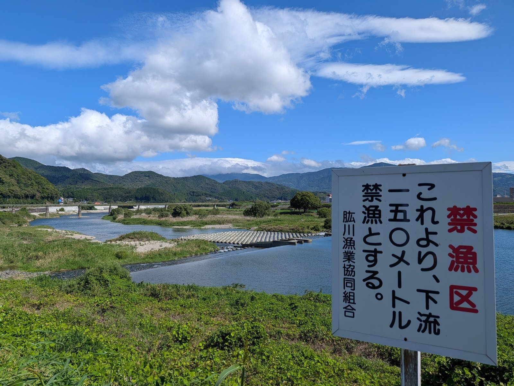

大洲の暮らし ・ 出典: 愛媛県報（肱川漁業協同組合の遊漁規則）、愛媛県漁業調整規則、水産庁、大洲市議会会議録ほか（情報源日付: 2026-06-16） ・ 約9分で読める
肱川で鮎を釣るには、いくら払って、どこなら釣っていいのか
 メモう
メモう
肱川で鮎を釣るには、漁協にお金を払うんよ。友釣りなら1日1,500円。
中学生以下は、友釣りまで無料。県内でもめずらしい決まりやった。
岸で見た「150メートル」の看板も、規則を読んだら見当がついたんよ。
3行でいうと調べた資料 16本
- 肱川で鮎を釣るには肱川漁協に遊漁料を払う。友釣りは1日1,500円・1年4,000円、竿釣りは1日1,000円・1年2,500円
- 中学生以下は友釣りも無料。県内11の漁協で、中学生まで友釣りも無料と読めるのは肱川と肱川上流だけだった
- 解禁は6月1日の午前5時。釣ってはいけない区域が、漁協と県の規則を合わせて14か所ある
岸に立っていた、150メートルの看板
2026年9月、肱川の岸にこんな看板が立っていた。
禁漁区 これより、下流一五〇メートル禁漁とする。
肱川漁業協同組合

川で魚を釣るのに、決まりがある。区域によっては、釣ってはいけない。そして多くの場合、お金もいる。
肱川は鮎で知られた川なのに、「いくら払えば、どこで、いつ釣っていいのか」が1枚にまとまった資料が見当たらなかった。県報に載っている漁協の規則と、県の規則を読んで、並べ直した。看板の「150メートル」が何を指すのかは、後半で答える。
肱川の鮎は、誰が管理しているのか
肱川の鮎を管理しているのは、肱川漁業協同組合（肱川漁協、大洲市柚木）である。愛媛県から「内共第17号」という第5種共同漁業権の免許を受けている。期間は令和6年4月1日から令和16年3月31日までの10年間だ。
範囲は、河口から鹿野川ダムの堰堤の下まで。河口の線は、長浜の水族館跡の前にある地区整理記念碑と、沖浦港の北防波堤の角を結んだ線で決められている。本流と支流の両方が入り、関係地区は大洲市・伊予市中山町・内子町・砥部町にまたがる。対象の魚は、あゆ・こい・うなぎ・あまご・もくずがにの5つ。
鹿野川ダムより上は、別の漁協の区域になる。西予市野村町の肱川上流漁協（内共第18号）で、券も別に買う必要がある。
なぜお金がいるのか。第5種共同漁業権を持つ漁協には、漁業法にもとづいて、対象の魚を増やす義務（放流など）がある。組合員でない人が魚を取ることを「遊漁」と呼び、知事の認可を受けた「遊漁規則」に従って、遊漁料を払う。肱川漁協の遊漁規則は、令和6年4月1日に愛媛県が認可し、県報に全文が載っている。この記事の金額と決まりは、すべてこの県報の規則から取った。
いくら払うのか
遊漁規則の第10条が、料金を決めている。
| 券 | 使える釣り方 | 1日 | 1年 |
|---|---|---|---|
| 遊漁B | 手釣り・竿釣り・たも網・すくい網 | 1,000円 | 2,500円 |
| 遊漁A | 友釣り・じんどう・なげ網と、Bの釣り方 | 1,500円 | 4,000円 |
| かにかご | かにかご5個まで | ― | 5,000円 |
| とあみ | 投網と、A・Bの釣り方 | 3,000円 | 8,000円 |
鮎を友釣りで釣るなら遊漁A、ふつうの竿釣りなら遊漁Bになる。
そして、中学生以下は、遊漁AとBが無料である。友釣りも入る。
これは前からそうだったわけではないらしい。フィッシュパスに置かれている、日付の書かれていない以前の版の規則では、中学生以下の無料は「手釣及び竿釣」だけだった。いまの規則では、友釣りまで広がっている。
どこで買えるのか
遊漁料を払える場所も、規則に書かれている。
- 肱川漁協の事務所（大洲市柚木）
- 大洲市内の店：ジャンプワールド大洲店（東大洲）、ENEOS大川SS（成能）
- 内子町の店：紺屋釣具店（五十崎）
- 松山・伊予方面の店：釣具フレンド松山店・松前店、ジャンプ土居田店・伊予店
- ほかの漁協：蒼社川漁協（今治市）、肱川上流漁協（西予市）
- オンライン：フィッシュパス
払うと「遊漁承認証」がもらえる。釣っているあいだは持ち歩き、漁場監視員に求められたら見せる。オンラインで買ったときは、スマートフォンの画面を見せればよい。
気をつけたいのは、肱川の規則には、川で監視員に払う方法が書かれていないことだ。ほかの川には、その場で払える代わりに料金が上乗せされるところがある（仁淀川は2,000円増し）。肱川では、先に買っておくことになる。スマートフォンがあれば、川べりでもフィッシュパスで買える。
承認を受けずに対象の魚を取ると、漁業権の侵害にあたる場合があり、県の罰則一覧では100万円以下の罰金とされている。規則に違反した人には、漁協がその場で遊漁の中止を命じ、以後の遊漁を断ることもできる。払った遊漁料は戻らない。
いつから釣っていいのか
鮎は、6月1日の午前5時から12月31日まで。県の規則でも、川の鮎は1月1日から6月1日の午前5時までは取れない。解禁は、日付だけでなく時刻まで決まっている。
ほかの魚はこうなっている。
| 魚 | 釣っていい期間 | 大きさの制限 |
|---|---|---|
| あゆ | 6月1日午前5時〜12月31日 | ― |
| あまご | 2月1日〜9月30日 | 15cm以下は取れない |
| うなぎ | 1年中 | 25cm以下は取れない |
| もくずがに | 大川の鳥首から上流と支流は8月1日〜4月30日、下流の本流は9月1日〜4月30日 | ― |
明かりの使い方にも決まりがある。6月1日から7月31日までは、明かりを使った遊漁はできない。8月1日からは、鮎を取る目的なら電池3本・3.8アンペア以下の明かりまで使える。水の中で明かりを使うのは禁止だ。
使ってはいけない漁法もある。空掛け（魚を針で引っかける釣り方）、瀬干し、潜ってのやす、電流、潜水器、舟を使った遊漁などである。
どこなら釣っていいのか
区域の中なら基本的にどこでもよいが、釣ってはいけない区域が決められている。漁協の遊漁規則に10か所、県の漁業調整規則に肱川漁協の区域内で4か所ある。
| 場所 | いつ | 決めているのは |
|---|---|---|
| 鹿野川ダムの下端から下流150m（肱川町） | 1年中 | 漁協 |
| 龍宮堰の上流200m地点から上流280m（内子町五十崎） | 1年中 | 漁協 |
| 龍宮堰の上流50m・下流50m（内子町五十崎） | 6月1日〜30日 | 漁協 |
| うずしり堰の上流270m、同じ堰から下流90m（内子町） | 1年中 | 漁協 |
| 幕の内堰の上流端から上流400m（伊予市中山町） | 1年中 | 漁協 |
| 明治橋の上流端から下流122mの堰堤まで（内子町小田） | 1年中 | 漁協 |
| 矢落川の新大橋の下流10m地点から上流400m（新谷） | 1年中 | 漁協 |
| 春賀峠橋の上流端から下流300m | 10月1日〜11月30日の鮎 | 漁協と県 |
| 春賀峠橋の下流500m地点から下流300m（通称たてのしろ） | 10月1日〜11月30日の鮎 | 漁協 |
| 祇園大橋の上流から下流400m（八多喜町） | 10月1日〜11月30日の鮎 | 漁協と県 |
| 字久保と字富士（規則の表記のまま）の標識を結ぶ線から下流600m | 1年中 | 県 |
| 森山のウノワダ淵の上流端から下流230m | 1年中 | 県 |
| 大洲城下の床止め可動堰の上流50m・下流100m | 1年中 | 県 |
| 大瀬の東梅津橋の上流50m・下流200m（内子町） | 1年中 | 県 |
秋の3か所（春賀峠橋の2か所と祇園大橋）は、鮎が卵を産む場所を守るための区域である。県の規則でも、春賀峠橋と祇園大橋は10月1日から11月30日まで鮎を取ってはいけない。さらに五郎橋から峠橋までは「指定された産卵場」として、川底をかき回すことが禁じられている。
県の規則の区域は「何人も」取ってはいけない区域で、組合員も同じである。
反対に、釣りのための区域もある。河辺川の「ふるさとの宿」付近の500メートルは、釣り専用区になっている。
看板の「150メートル」は、どこのことか
冒頭の看板に戻る。
看板そのものには、どの規則のどの区域なのかは書かれていない。ただ、上の表で「合わせて150メートル」になる区域は、2つしかない。鹿野川ダムの下の150メートルと、大洲城下の床止め可動堰の上流50メートル・下流100メートルである。
写真には、川を横切る低い堰と、その奥の鉄橋が写っている。ダムは写っていない。
だから、この看板は大洲城下の堰の区域の上の端に立っていて、そこから下流へ、堰をはさんだ150メートルが禁漁、と読むのがいちばん筋が通る。県の規則のこの区域は、季節を問わず1年中、誰も魚を取ってはいけない。
ただしこれは、写真と規則の数字から読み取った推測である。看板の前で確かめたわけではない。
高いのか、安いのか
同じ県報には、愛媛県内の漁協の遊漁規則がまとめて載っている。鮎が対象になっている11の漁協について、友釣りに使える券の料金を並べた。高知の2つの川も加えた。
| 漁協（川） | 1日 | 1年 | 中学生以下の扱い |
|---|---|---|---|
| 肱川漁協（肱川） | 1,500円 | 4,000円 | 友釣りも無料 |
| 肱川上流漁協（肱川・西予市） | 2,000円 | 6,000円 | すべて無料 |
| 銅山川漁協（四国中央市） | 1,500円 | 6,000円 | 手釣り・竿釣りは無料 |
| 加茂川漁協（西条市） | 2,000円 | 5,000円 | 手釣り・竿釣りは無料 |
| 中山川漁協（西条市） | ― | 4,000円（竿釣り） | 竿釣りは無料 |
| 蒼社川漁協（今治市） | ― | 4,000円 | 小学生以下は無料 |
| 重信川漁協（砥部町など） | ― | 1,500円（友釣りの区分なし） | 手釣り・竿釣りは無料 |
| 湯山漁協（松山市） | 500円 | 2,000円 | 手釣り・竿釣りは無料 |
| 面河川漁協（久万高原町） | 3,000円 | 7,000円 | 手釣り・竿釣りは無料 |
| 広見川漁協（鬼北町など） | 3,000円 | 5,000円 | 友釣りを除く第1種は無料 |
| 岩松川漁協（宇和島市） | 1,000円 | 3,000円 | 手釣り・竿釣り・たも網は無料 |
| 仁淀川漁協（高知県） | 2,000円 | 9,000円（釣り） | 高校生以下は釣りのみ無料 |
| 四万十川東部漁協（高知県） | 2,000円 | 8,000円（普通遊漁券） | 記載なし（高校生は500円） |
※愛媛県の11漁協は令和6年4月1日に認可された時点の額。高知の2つは令和8年度の額。
並べて分かったことは3つある。
1つ目。肱川の友釣りの年券4,000円は、県内では安いほうである。肱川より安いのは、湯山（2,000円）と岩松川（3,000円）だけだった（友釣りを分けていない重信川を除く）。
2つ目。中学生まで友釣りも無料と読めるのは、肱川と肱川上流の2つだけだった。ほかの多くは、無料を手釣り・竿釣りに限っている。蒼社川は、小学生以下なら友釣りも無料になる。中山川と重信川は「竿釣り」を無料にしていて、友釣りがそこに含まれるかは規則に書かれていない。
3つ目。高知の名の知れた川と比べると、差ははっきりしている。仁淀川の釣りの年券は9,000円、四万十川東部漁協の普通遊漁券は8,000円。肱川の年券は、その半分以下である。仁淀川は高校生以下の釣りを無料にしている点で、子どもの扱いはさらに広い。
肱川の鮎は、いまどうなっているのか
料金が安いのは、魚が少ないからなのか。そこまでは資料からは分からなかった。ただ、市議会では、肱川の鮎をめぐる話が何度か出ている。
2018年6月の議会では、議員が「アユが育たない」と質問した。料理屋で鮎料理を断っているという話、漁協が稚魚の産地を変えて放流していること、鹿野川ダムのアオコ対策の装置でダムの底の濁りが下流へ流れ、鮎のえさになる藻が石に付かないという漁協の指摘が紹介されている。
2023年の秋は、雨が極端に少なかった。鹿野川ダムの貯水率は0％になった。10月19日に肱川漁協から要望を受けて、市は国土交通省にダムの底にたまった水（堆砂容量内の貯留水）を使うよう求め、使うことになったと市長が答えている。鮎の育ちは例年より小さいとされ、翌年以降の漁獲量を心配しているとも述べていた。
そして2026年度から、市はカワウを有害鳥獣の捕獲奨励金の対象に加えた。カワウは鮎を中心に1日500グラムの魚を食べると言われ、奨励金は1羽1,200円。県内で奨励金を出している6市町を調べたら5市町が1,200円だったので、それに合わせたという。国の補助は200円で、県の補助は無い。6月の時点で、捕獲の実績はまだ無かった。
1日1,500円の券の向こうには、稚魚を放流し、渇水の年にはダムの水を頼んだ漁協と、カワウに鮎を食べられている川がある。看板の150メートルも、その川を守る決まりの1つである。
出典・参考にした資料
愛媛県報 令和6年4月1日 第496号外4／愛媛県(告示第305号で内水面の漁業権を免許、告示第306号で各漁協の遊漁規則を認可。肱川漁業協同組合 内共第17号 第5種共同漁業権遊漁規則の全文：遊漁料、中学生以下の扱い、納付できる場所、遊漁期間、禁止区域、禁止漁法) 愛媛県 内水面における区画漁業及び共同漁業に係る内水面漁場計画の内容／水産庁「漁業権に関する情報」(愛媛県報の写し。内共第17号の漁場の区域・漁業の種類・漁業時期・関係地区、内共第18号の区域、存続期間は令和6年4月1日から令和16年3月31日まで) 愛媛県漁業調整規則（令和2年愛媛県規則第57号）／愛媛県(第40条の肱川筋の禁止区域、第41条のあゆの禁止期間。地名はPDFのページを画像にして読んだ) 遊漁上の制限又は禁止事項について／愛媛県水産課(内水面のあゆは1月1日から6月1日午前5時まで禁止、肱川の2か所は10月1日から11月30日まで禁止) 関係法令罰則一覧／愛媛県水産課(漁業権侵害と漁業調整規則違反の罰則) 釣り人のためのルールとマナー／愛媛県水産課(2026年4月1日更新。2026年9月23日に確認) 内水面の遊漁に関する制度／水産庁(第5種共同漁業権の増殖義務と、知事の認可を受けた遊漁規則。2026年9月23日に確認) 肱川（肱川漁協）／FISHPASS(オンラインで買える遊漁券の料金と漁期、漁協の所在地。2026年9月23日に確認) 肱川漁業協同組合 内共第17号 第5種共同漁業権遊漁規則（以前の版の写し）／FISHPASS(日付の書かれていない以前の版。中学生以下の無料は手釣と竿釣だけだった) 仁淀川漁業協同組合(令和8年度の遊漁料：年券 釣り9,000円・網11,000円、日券 釣り2,000円。2026年9月23日に確認) 釣り ルール／仁淀川漁業協同組合(高校生以下は釣りのみ無料、現場で監視員に払うと2,000円を加算。2026年9月23日に確認) 令和8年度 遊漁料／四万十川東部漁業協同組合(普通遊漁券 1年8,000円・1日2,000円、特別遊漁券 1年10,000円・1日5,000円。2026年9月23日に確認) 大洲市議会 平成30年6月定例会 会議録（3日目）(肱川でアユが育たないという質問。漁協が稚魚の産地を変えて放流していること、鹿野川ダムのアオコ対策をめぐる漁協の指摘) 大洲市議会 令和5年12月定例会 会議録（2日目）(2023年秋の渇水。肱川漁協の要望を受けた鹿野川ダムの堆砂容量内貯留水の活用、アユの生育が例年より小さいという市長答弁) 大洲市議会 令和8年3月定例会 会議録（1日目）(アユなどを捕食するカワウを、有害鳥獣の捕獲奨励金の対象に加えるという予算の説明) 大洲市議会 令和8年6月定例会 会議録（3日目）(カワウの捕獲奨励金は1羽1,200円、県内で奨励金を出す6市町のうち5市町が1,200円、国の補助は200円、6月時点で実績なし)この記事をサイトに掲載した日: 2026/09/24